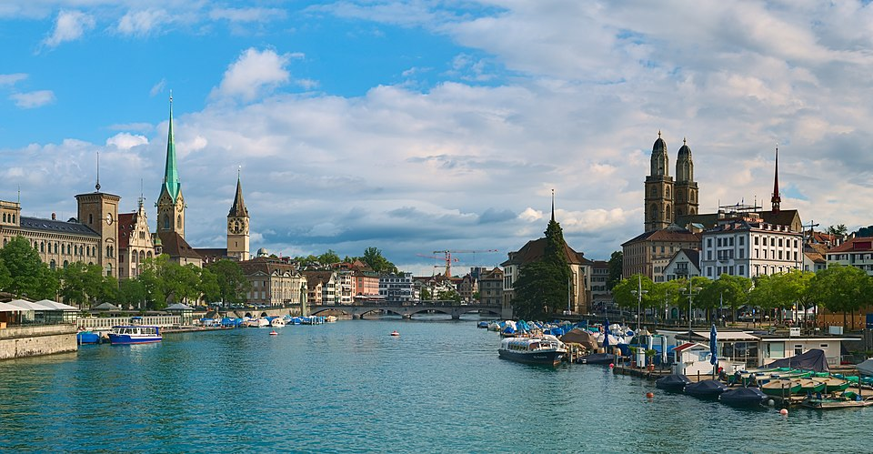
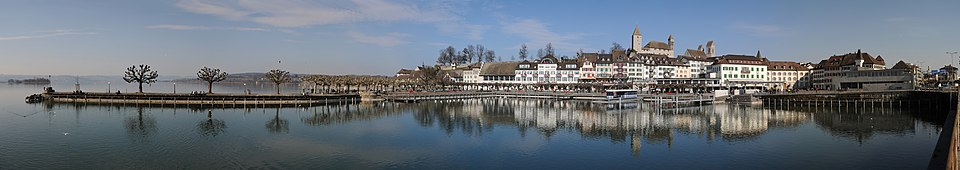
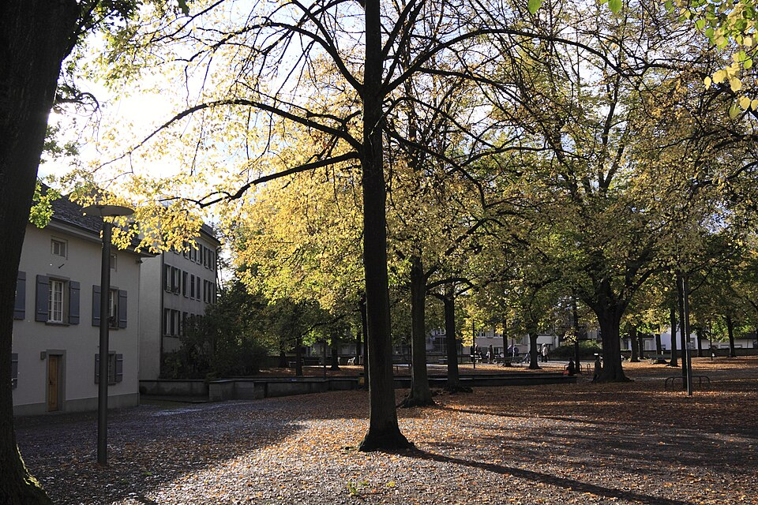

Landmarks & Must-See Spots
4 spotsGrossmünster
Historic
Romanesque-style cathedral with twin towers — Zurich’s most iconic landmark. Climb the Karlsturm tower for sweeping city and lake views.
Grossmünsterplatz, Altstadt
Researched

Fraumünster
Historic
Medieval church renowned for its five stunning stained glass windows by Marc Chagall (1970). The serene interior is worth the visit.
Münsterhof 2, Altstadt
Researched

Lake Zurich
Nature
The lakeside promenade stretches from Bürkliplatz south along the eastern shore. Perfect for a sunset walk, with views of the Alps on clear days.
Bürkliplatz & lakefront
Researched

Lindenhof
Viewpoint
Peaceful hilltop park on the site of a Roman fort. Panoramic views over the Limmat, Niederdorf rooftops, and the university. Free and quiet.
Lindenhof hill, Altstadt
Researched
